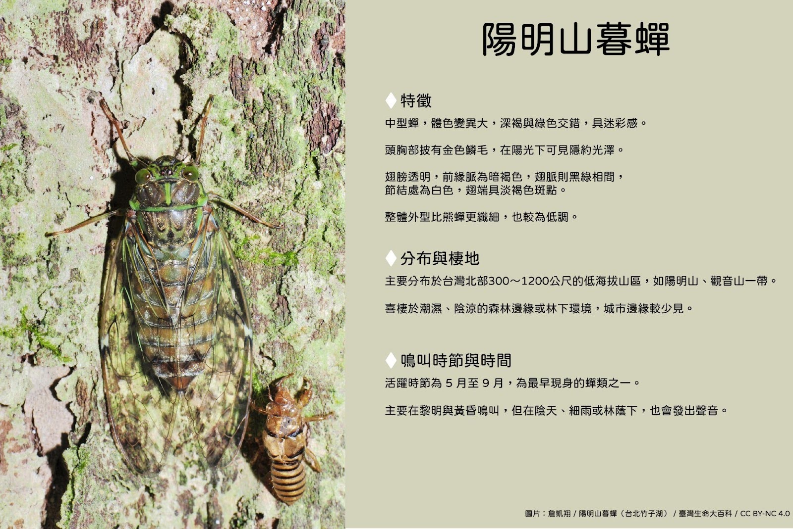
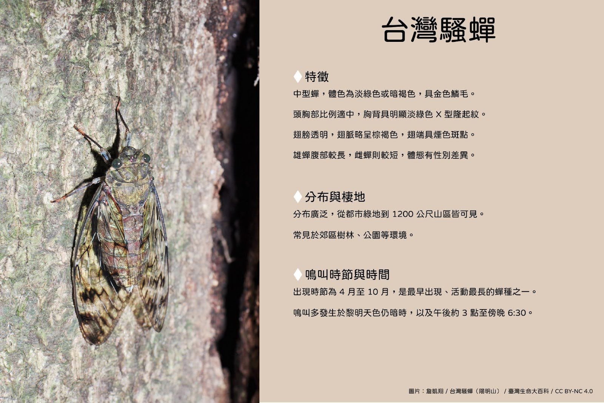
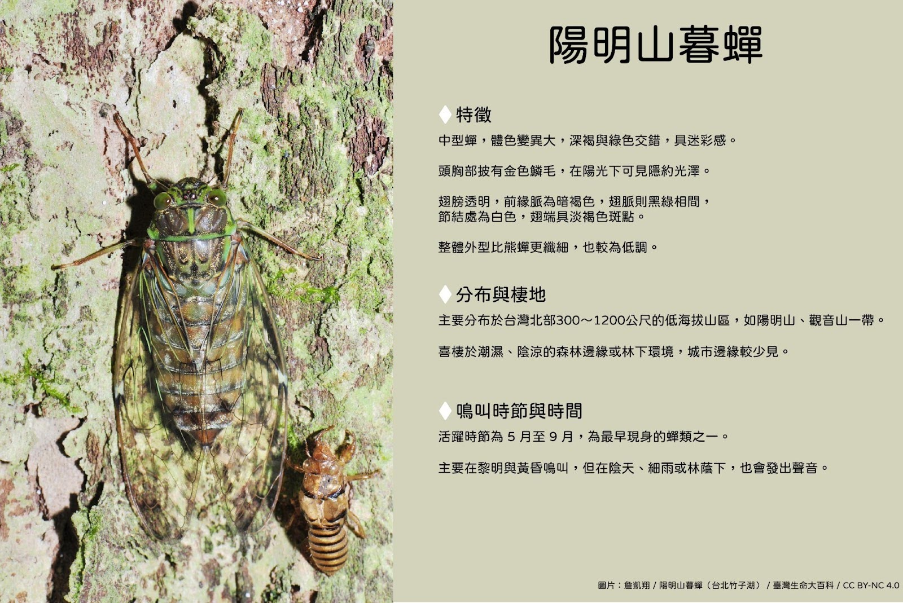
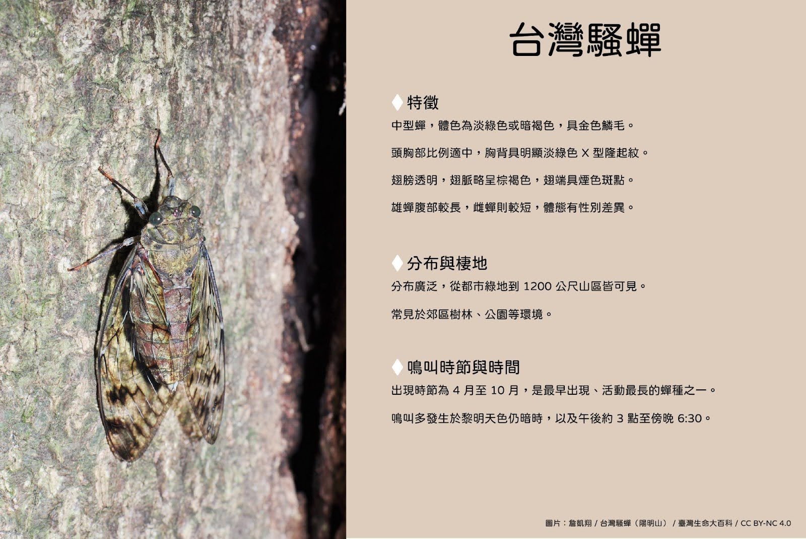

揭開夏日鳴唱者的祕密
每到夏季，從城市行道樹到山林步道，一陣陣高亢的蟬鳴便成了盛夏最具代表性的聲音。這些聲音來自蟬，一種外表並不起眼、卻擁有強大鳴叫能力的昆蟲。蟬廣泛分布於溫帶與熱帶地區，是地球上歷史悠久的昆蟲之一。在台灣，已記錄的蟬類約有六十種，其中近六成為台灣特有，是夏日最常見的節肢動物之一。
蟬的一生多數時間潛伏於地底，歷經數年才終於破土而出。短短數週的成蟲期，是牠們唯一能夠飛翔、鳴叫與繁殖的階段。在這段短暫而熱烈的夏日生命裡，蟬不只是聲音的製造者，也是生態系中的重要角色。當牠們從地下羽化，會將累積多年的氮元素帶上地面，促進土壤養分的循環，間接維繫著植物的健康。同時，大量出現的蟬成蟲也成為鳥類、蜘蛛與其他昆蟲的重要食物來源，支撐著夏季食物鏈的穩定運作。
蟬為什麼會叫？從發聲原理到聲音生態的秘密
什麼時候會叫？──出現的時節
蟬的鳴叫主要出現在夏季，是因為牠們的成蟲通常在氣溫升高（25℃以上）、濕度偏高（60%以上）的時候才會活動。
在台灣， 4 到 9 月是蟬鳴最頻繁的季節，高砂熊蟬等物種甚至能延續到 10 月。

什麼時間叫？──依物種區分的鳴叫時段
不同的蟬會選擇一天中不同的時段鳴叫。這樣的時間分化有助於物種之間避免彼此干擾，也反映出牠們各自的生理節奏。根據鳴叫時間，可將蟬大致分為三種類型：

每種蟬在特定時段鳴叫，可以減少聲音重疊與資源競爭，讓多種蟬得以在同一棵樹、同一片林地中共存。然而，近年來受到氣候變遷、環境污染、都市擴張以及天敵改變等多重因素影響，蟬的鳴叫時間出現異常現象。例如氣溫異常升高可能導致某些蟬提早出現，城市夜間光害則可能讓牠們錯估晝夜節律，進而影響原本穩定的鳴唱節奏與生態分布。這些改變不僅攪亂了原有的聲音秩序，也可能衝擊物種間的共存平衡。
為什麼會叫？──鳴叫的目的
蟬的鳴叫是雄蟬的求偶行為。牠們用叫聲吸引雌蟬靠近，聲音強弱與節奏變化都是「展示自我」的一種方式。
不同物種的叫聲節奏、音高與長度各異，這不僅是繁殖訊號，也是雌蟬辨認同種對象的依據。
當多隻雄蟬聚集時，牠們甚至會彼此「唱和」或「對抗」，這是一種聲音上的競爭行為，有時會形成整片林地的共鳴景象。
怎麼會叫？──發聲的構造原理
蟬的聲音不是從嘴巴發出，而是來自腹部的「鳴器」（tymbal）。這是一對彈性膜片，能快速振動。
每一次振動會發出「啪」的聲響，當鳴器以高速規律震動時，就會產生連續的鳴叫聲。
蟬的體腔會產生共鳴，進一步放大聲音，讓牠們即使體型小，聲音卻能傳得很遠。

蟬的鳴叫，是由雄蟬為求偶而產生的聲響行為，發聲依靠腹部兩側的鳴器結構，經由高速震動與共鳴放大後，傳遍整座林地。
不同蟬種的鳴叫會避開時間重疊，形成彼此區隔的「聲音生態位」，讓多種蟬能在同一環境中共存。在這之中，最容易被人類聽見的，是體型龐大、音量強烈、活動密集的熊蟬屬成員。牠們不僅在市區、公園、山林中大量出現，鳴叫聲也具有鮮明的種類差異。

 


